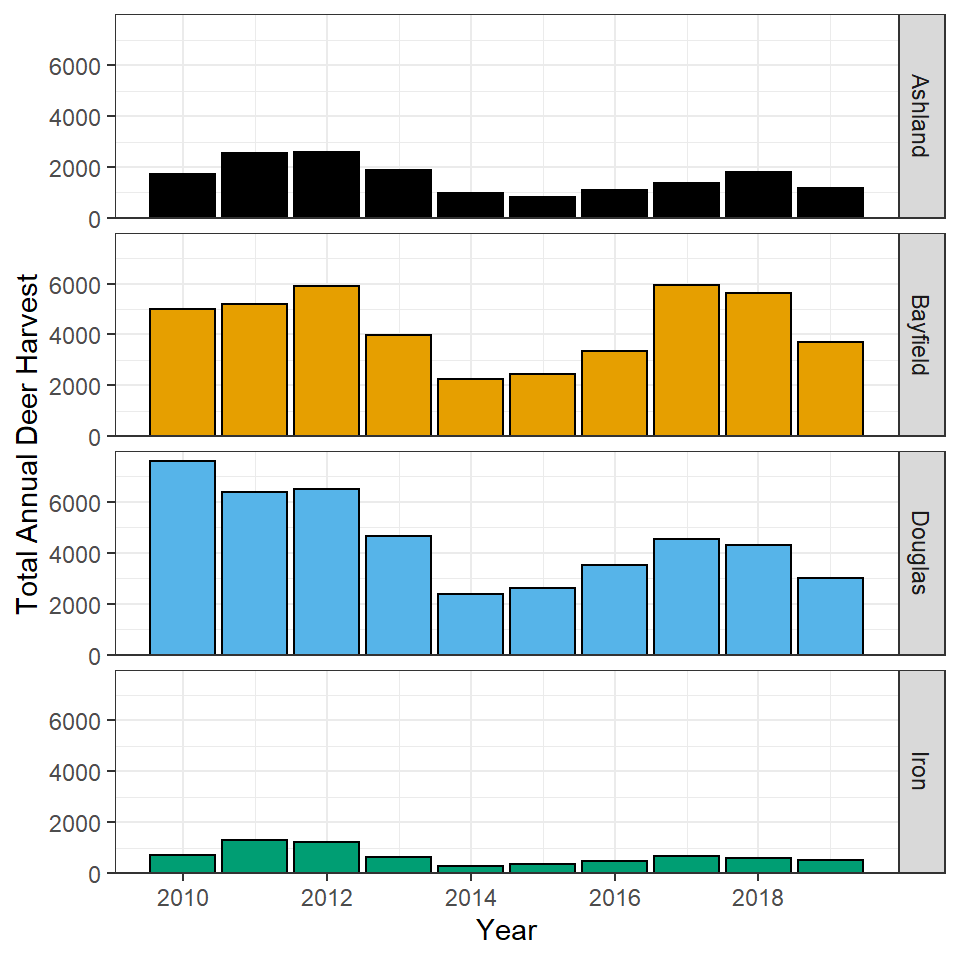

In “Example 1” of this demonstration we made a histogram of the prices of avocados sold in the Great Lakes region. Create a faceted version of this histogram that will allow the viewer to easily compare the price of avocados by both type of avocado (“conventional” or organic) and year.
In the “State and No Good Deer Hunting 4” exercise on this page you created a stacked percentages plot of the respondent’s agreement with the statement ‘There is no way sportsmen can have good deer hunting if wolves live in the same area’” separated by state. Rather than that plot, create a set of side-by-side bar charts of the percentage agreement separated (faceted) by state.
In “Total Annual Harvest by County and Year” on this page you constructed a line plot of the total number of all deer harested per year for four counties in Wiscnosin. Use those same data to construct the plot below.

Repeat the plot from the previous question by allowing the y-axis scale to vary among facets.
Whether you use this plot or the plot in the previous section depends on what you want your viewer to focus on. Explain why (i.e., what do you want your audience to focus on) you would use each of these plots.